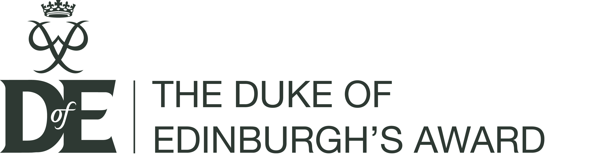

Duke Of Edinburgh Award
- The ability to work in a group environment through planning routes for mountain climbing
- Work experience that will give me an idea of what to expect in that kind of environment
- Improved social skills through working with the community, helping me convey my thoughts to collegues better 
Last year I completed my Bronze Duke of Edinburgh award, which gave me some invaluable skills such as :